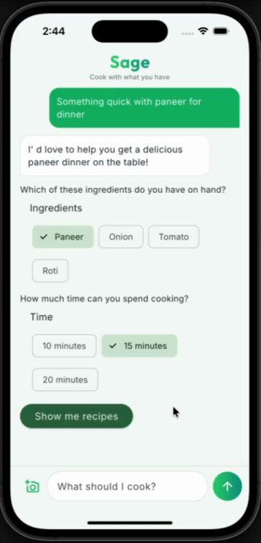
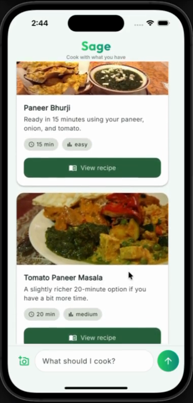
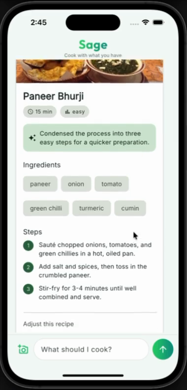
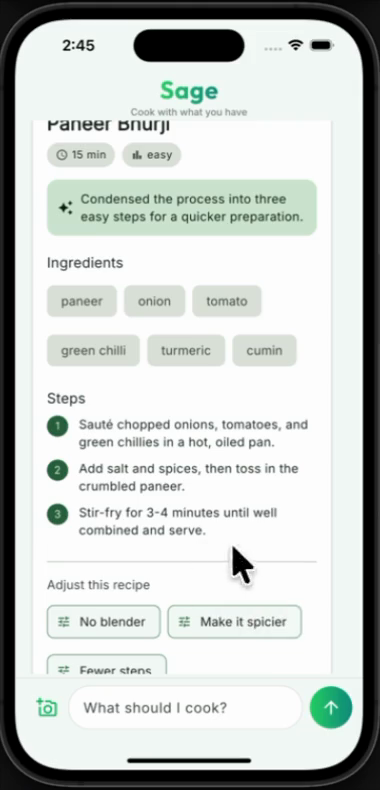
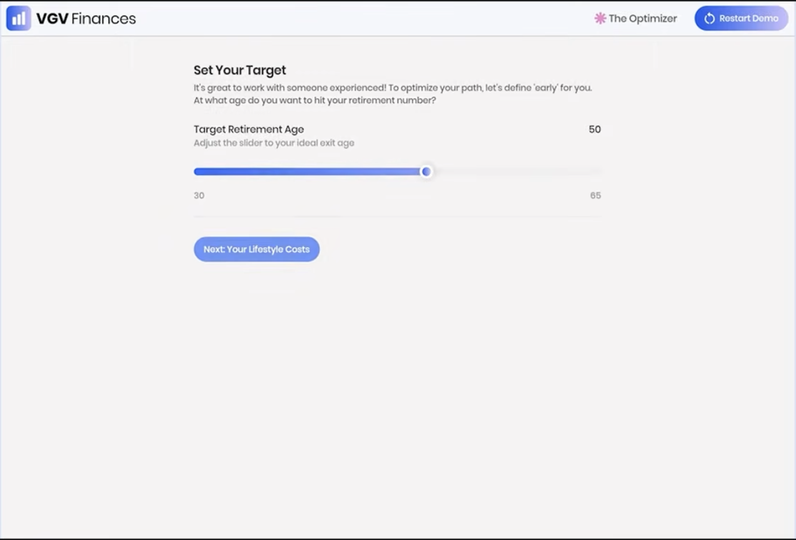
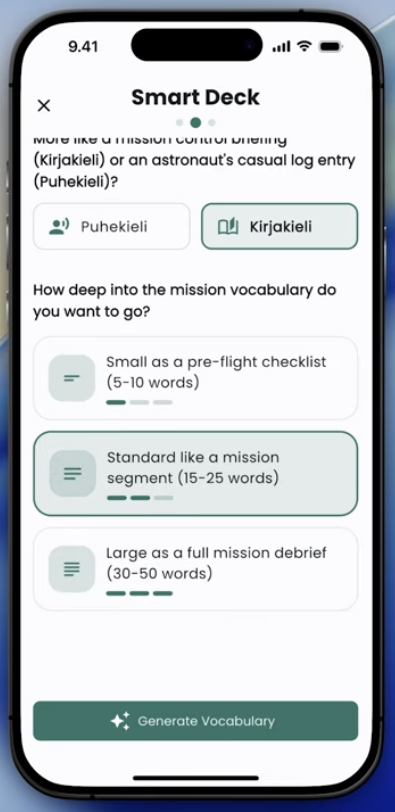

Building generative interfaces with Flutter's GenUI SDK

This one's for you if…
- 01You build with Flutter, and you've already added an AI feature or two.
- 02That "AI feature" is a chatbox that answers with a wall of text.
- 03You want the model to actually do things in your app — not just talk.
- 04You like to ship.
We bolted a chatbot on.
And called it AI.
10 min · easy
You ask a question. You get back text. You still have to read it, decide, and go tap the real UI yourself.
From routes you draw to screens it builds.
You designed every screen
Every screen drawn, every route wired by hand. The journey can only go where you predicted it would.
The model assembles them
You register the widgets; the model composes the screen for what was actually asked — and rebuilds it as the conversation moves.
Generative UI:
the model builds the interface.
Instead of replying in text, the model assembles real, interactive widgets — cards, chips, forms — out of your design system, shaped by what the person actually asked for.
They get a screen to use. Not a transcript to read.
The Flutter GenUI SDK
An experimental package from the Flutter team. It lets the model build your app's UI at runtime — from widgets you own, in your brand.
You decide how everything looks. The model decides what to show.
⚠︎ It's early. The API still changes between versions — pin your version and expect to refactor.
Three ideas. That's it.
The catalog is the contract
The model can only use widgets you register. Not in the catalog? It can't use it. Your design system, enforced at runtime.
It returns JSON, not code
The model describes the UI as data. Your app turns that into real, native Flutter widgets.
Interactions loop back
A tap or a pick goes back to the model, which updates the screen. That loop is what makes it generative, not just dynamic.
Why JSON — and not code?
Safe
The model never runs code on your client. It sends data describing pre-approved components — nothing to inject, nothing to execute.
Native
That JSON maps to your widgets. Your fonts, spacing, theme. It looks like your app because it is your app.
Streamable
Flat JSON arrives piece by piece, so the UI builds as the model thinks — no waiting for one perfect blob.
One model response.
Many front-ends.
Underneath sits an open protocol. The same response can render on Flutter, React, Angular, or native — each drawing with its own components.
Apache-2.0, built by Google with the open-source community. Flutter is one renderer that speaks it.
A2UI — a shared language for UI
A2UI lets a model send an interface safely across a trust boundary: not text, not code, but a declarative description the client renders with its own widgets — natively across web, mobile, and desktop.
Round and round.
Each turn, the screen gets closer to what they meant.
Meet Sage.
A cooking assistant. Tell it what you feel like — "something quick with paneer" — and it builds the screen: preference chips, recipe cards, a full recipe you can tweak. Plain words in, a usable screen out.
One thing to hold onto: the app owns the facts, the model owns the words.
Let's cook.
Watch the screen rebuild itself each turn. Nobody designed these exact states — the model assembled them from my widgets.
- 01Ask for something — "quick dinner with paneer"
- 02Chips gather what's on hand → recipe cards appear
- 03Tap a card → the full recipe builds out
- 04Say "no blender" → it rewrites the steps in place
Four turns, four screens.




It never invented a recipe.
It chose from the recipes I gave it, and adapted only the language — the steps, the tone. The cook times and ingredients came straight from my data.
That split — model for words, app for facts — is the quiet trick behind the whole thing.
How it all fits together.
Follow one turn, top to bottom — each piece hands off to the next, then loops back.
A widget the model is allowed to use
final recipeCardItem = CatalogItem(
name: 'RecipeCard',
// The schema only accepts an id — not a title, not a price.
// The model can point at a recipe, never invent one.
dataSchema: S.object(properties: {
'recipeId': S.string(),
'reason': S.string(), // the one thing it may write freely
}, required: ['recipeId']),
widgetBuilder: (ctx) {
final recipe = recipeById(ctx.data['recipeId']);
return RecipeCard(recipe: recipe); // your widget, your brand
},
);name + schema + builder. The schema is the leash — it's how you stop the model hallucinating recipes that don't exist.
App owns facts. Model owns words.
final recipe = recipeById(recipeId); // FACTS: from my data
final modelSteps = data['steps']; // WORDS: from the model
// Use the model's adapted steps if it sent any —
// e.g. "no blender" — otherwise fall back to mine.
final steps = (modelSteps != null && modelSteps.isNotEmpty)
? modelSteps
: recipe.steps;The model rewrites the phrasing. The cook time, the ingredients, the image — those are never up for negotiation.
Swap the model in one file
// No API key in the app — Firebase AI Logic holds it.
_model = FirebaseAI.googleAI().generativeModel(
model: 'gemini-3.1-flash-lite',
systemInstruction: Content.system(buildSystemInstruction()),
);
// genui just needs streamed text. Feed each chunk in.
await for (final res in chat.sendMessageStream(content)) {
_adapter.addChunk(res.text); // the backend-agnostic seam
}genui doesn't care which model you use. Change providers later and this is the only file you touch.
What the happy path
doesn't tell you.
Four things I learned building this — the kind you only find out by shipping.
The fence cuts both ways.
Locking the model to your data kills hallucination. It also means the moment someone asks for something you don't have, it has nothing honest to say.
Ask for a burger from a paneer menu, and a naive build will force paneer on you. You have to teach it to say "I don't have that — here's what I can do."
Decide who owns the truth.
The model is wonderful with language and careless with facts. So don't ask it to remember your prices or your inventory.
Let it own the words. Let your app own the facts. Once you draw that line, a lot of scary failure modes just… disappear.
Cleaning up the screen
is your job.
Generative UI keeps adding. Nothing gets tidied unless you tidy it. And the model controls each screen's identity — a smaller model that reuses an id will quietly paint over your last one.
Model quality isn't abstract here. It shows up directly in your UX.
It's a chattier loop
than a chatbot.
One thing the person does can be several model calls — gather, show, refine. So you hit rate limits sooner than a plain chat app would.
Pick your model tier with that in mind, and design your "thinking…" states for real.
GenUI in the wild.
Sage is my weekend toy. But this isn't a lab trick — over the past year, real teams have shipped real GenUI apps.
Three worth knowing: one from the Flutter team, one from a top agency, and one from a solo GDE.
- 01GenLatte — the Flutter team's playful Gemini demo
- 02VGV Finances — Very Good Ventures, at Google Cloud Next ’26
- 03Finnish it — a Flutter GDE's app, shown live at Google I/O ’26
GenLatte
The Flutter team's own GenUI demo. A couple of playful taps, and Gemini composes a personalized latte — Dash dreams it up while the screen assembles itself.
VGV Finances
Very Good Ventures' AI financial planner, built for Google Cloud Next 2026. Ask about a goal — “retire by 50?” — and it renders sliders, charts and chips on the fly. The model builds the screen, not a paragraph.

Finnish it
A language-learning app by Flutter GDE Cagatay Ulusoy. Each lesson's UI is generated on the fly to fit the drill — and it was shown live in the Google I/O “What's new in Flutter” session.

When to reach for it.
Great fit
When the screen should change with intent — exploring, deciding, narrowing down, or taking in a photo / voice / messy input.
Probably overkill
A static form. A settings page. A fixed flow you already know. A good plain screen still wins more often than people admit.
A chatbot that builds UI isn't always the answer. Use it where the uncertainty lives.
Resources.
GenUI docs & get-started
Build one yourself
Flutter + A2UI = GenUI
A2UI
Clone the code
The genui package
Thank you.
 akanshajain.dev
akanshajain.dev LinkedIn
LinkedInTwo Delhi communities, always open.
I help organise Flutter Delhi and FFDG New Delhi — talks, meetups, and a room full of people figuring this out together. Scan in, say hi.
Or DM me after — I read every message.